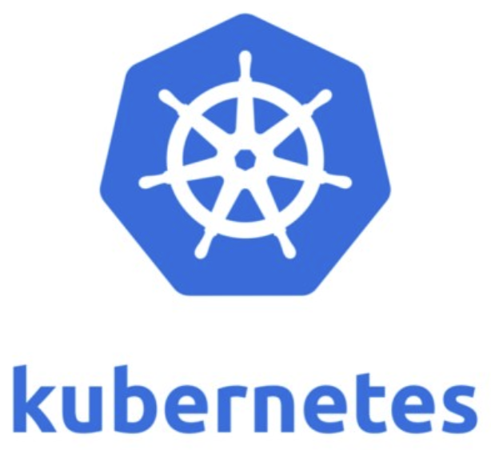
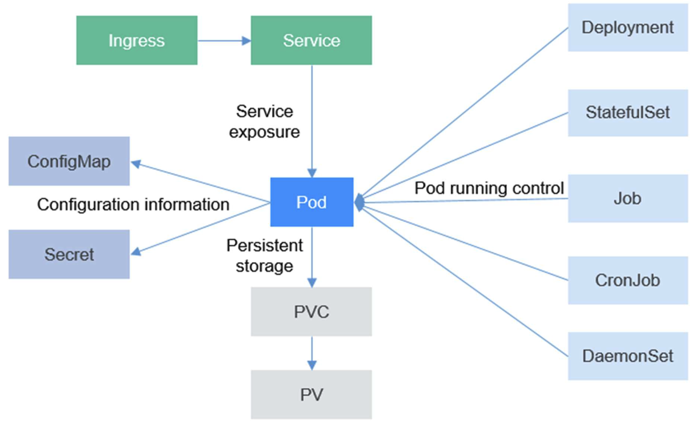
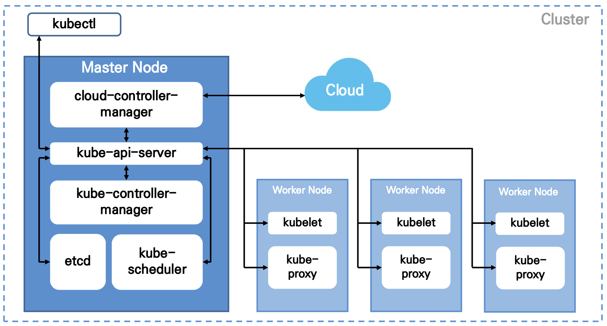
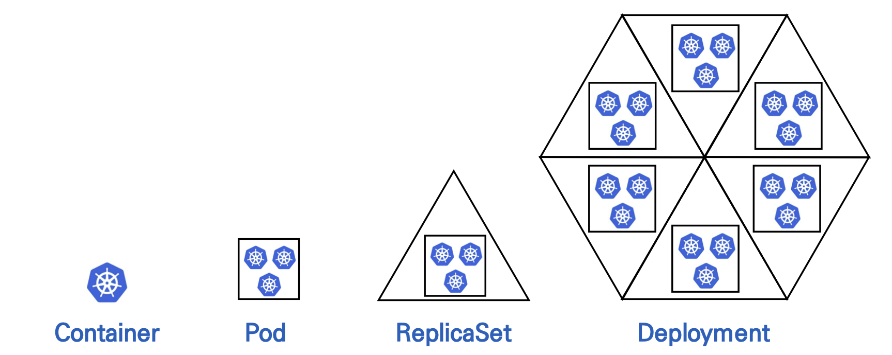
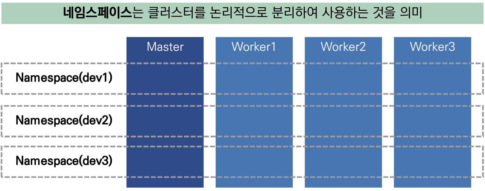
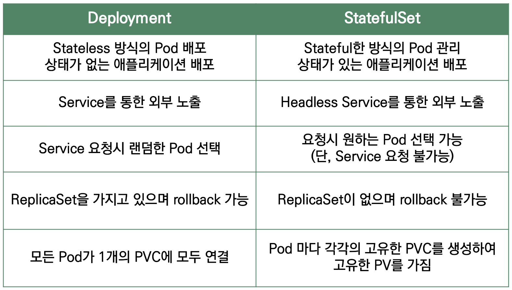
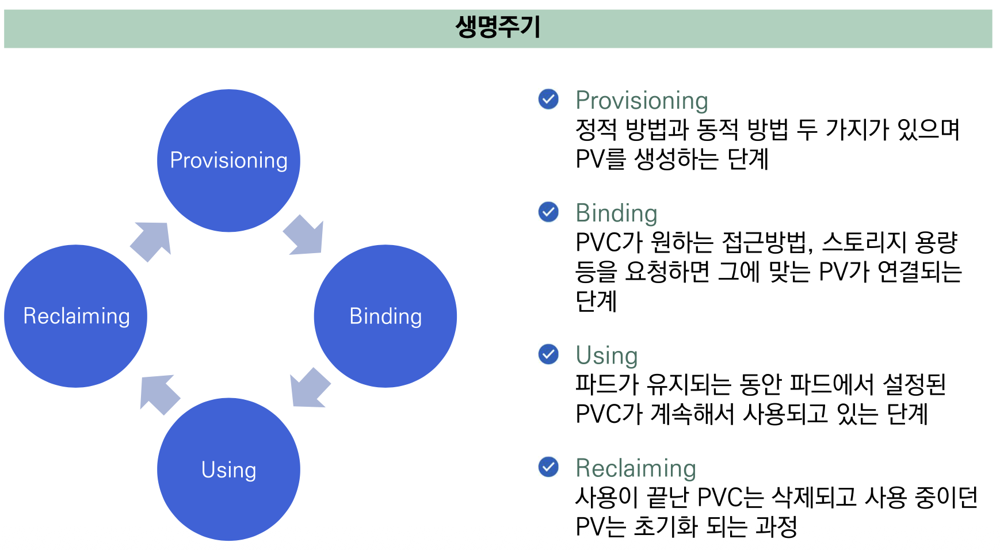
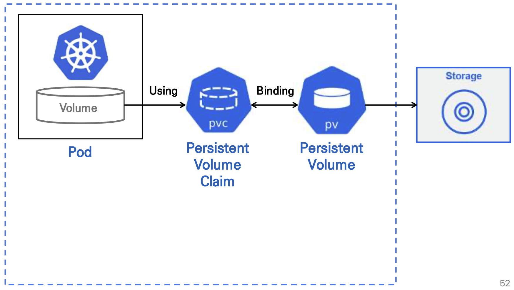
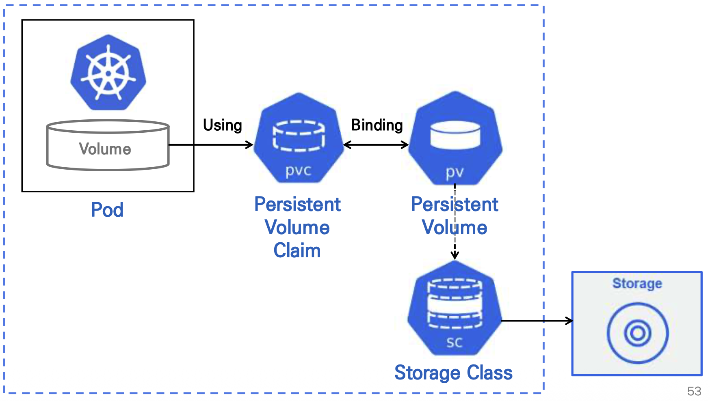
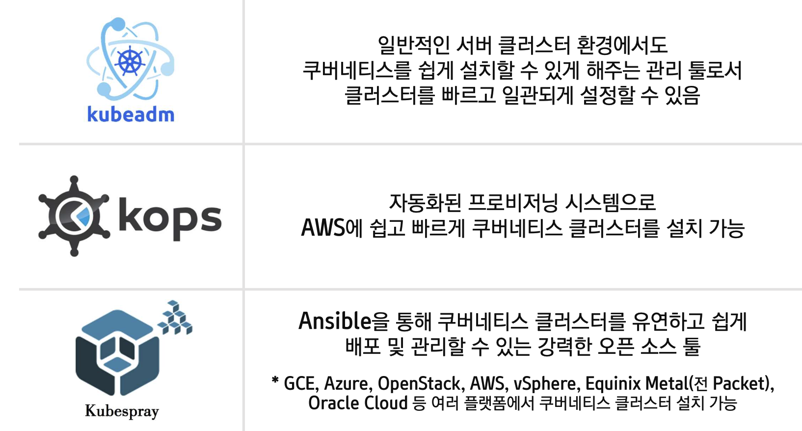

Kubernetes란

- 컨테이너화된 어플리케이션을 자동으로 배포, 스케일링 및 관리해주는 오픈소스 시스템
- 컨테이너화된 워크로드와 서비스를 관리하기 위한 이식성이 있고, 확장 가능한 오픈소스 플랫폼
특징

- 서비스 디스커버리와 로드밸런싱
- 스토리지 오케스트레이션
- 자동화된 롤아웃과 롤백
- 자동화된 bin packing
- 자동화된 self-healing
- 시크릿 Configuration
클러스터 구성 요소

Cluster
- Container화된 어플리케이션을 실행하기 위한 일련의 노드 머신의 집합
Master
- 클러스터 전체를 제어하며 내부에 있는 모든 노드를 관리하는 가상 머신
Worker
- 마스터에 의해 명령을 받고 실제 Container가 생성되고 일을 하는 가상 머신
kube-api-server
- 쿠버네티스의 모든 통신을 담당
kube-controller-manager
- Pod를 관리하는 각각의 컨트롤러를 제어하는 역할
kube-scheduler
- 리소스에 자원 할당이 가능한 노드에 할당하는 역할
etcd
- 클러스터 내의 모든 세부적인 데이터를 저장하는 key-value 저장소
cloud-controller-manager
- 컨트롤러들을 클라우드 서비스와 연결하여 관리
kubelet
- 모든 노드에서 실행
- Container 실행 및 지속적인 헬스체크를 통해 마스터의 kube-api-server와 통신하는 에이전트
kube-proxy
- 클러스터 내부의 가상 네트워크 설정하여 관리
Resource

Namespace

- 물리적 마스터/워커 노드를 논리적 단위로 분리한 리소스
- 권한이 부여된 네임스페이스만 접근 가능
Deployment
- ReplicaSet을 관리하면서 실행시켜야 할 Pod의 배포 및 관리를 하는 리소스
- 어플리케이션 배포를 세밀하게 관리
- Pod와 ReplicaSet의 선언적 관리 방법
- 배포 시 롤링 업데이트
ReplicaSet
- Pod의 개수를 유지하고 관리하는 리소스
- Pod 개수에 대한 가용성 보장
- Pod의 스케쥴, 스케일링, 삭제 담당
Pod
- 컨테이너를 돌리는 최소 단위
- 하나 이상의 Container그룹
- 쿠버네티스 내의 가장 작은 단위의 관리 리소스
Service
Volume
Ingress
- 클러스터 외부로부터 내부로 들어오는 네트워크 트래픽을 로드밸런싱
- L7 로드밸런싱 기능 수행
- Service에 외부 URL 제공
- 클러스터로 접근하는 URL 별로 다른 서비스에 트래픽 분산
- TLS/SSL 인증서 처리
- 도메인 기반의 Virtual Hosting을 지정
StatefulSet
- 동일한 컨테이너 스펙을 가진 Pod들을 관리
- 각 Pod는 식별자를 가지기 때문에 독자성 유지
- Pod 순서 및 고유성 보장
- 식별자가 있어 재스케줄링 간 지속적 유지
- 내부 Pod 마다 고유한 pvc 갖도록 설정 가능, 스케일 확장 시 PV 유지 가능
Job
- 여러 Pod를 지정하여 지정된 Pod를 성공적으로 실행하도록 하는 설정
- 배치, 임시 작업 등 처음 한번 실행하고 종료되는 작업에 사용
- Pod의 성공적인 완료를 보장
- 단일, 다중, 병렬
CronJob
- Job을 실행하는데 스케줄러 역할
- 데이터 백업, 이메일 송신 등 정해진 시간에 맞춰 반복적으로 Job 실행 시 사용
DaemonSet
- 클러스터 전체 특정 Pod실행 시 사용하거나 특정 노드 또는 모든 노드에 항상 실행되어야 할 특정 Pod를 관리
- 전체 노드에서 Pod가 한 개씩 실행되도록 보장
- 로그 수집기, 모니터링 에이전트와 같이 모든 노드에 항상 실행시켜야 하는 특정 Pod를 관리해야 할 때 사용
Persistent Volume
- 특정 Pod와 상관 없이 별도의 생명 주기를 가지는 독립적인 볼륨
- 프로비저닝은 정적 방법, 동적 방법 두 가지 방법으로 생성
- PVC로부터 요청이 들어오면 요청에 맞는 PV 할당
- PV와 PVC 매핑은 1:1 관계로 바인딩
Persistent Volume Claim
- 사용자가 PV에 하는 요청
- Pod와 PV를 연결
- 요청 시, 스토리지 용량, 접근 방법, 셀렉터 등 설정 가능
StorageClass
- PV로 확보한 스토리지 종류를 정의하는 리소스
- PV의 동적 프로비저닝일때, 사용되며 동적 프로비저닝을 활성화하려면 하나 이상의 스토리지 클래스가 미리 생성되어 있어야 함
- 스토리지 클래스를 미리 정의하면 그에 맞는 PV를 바로 생성할 수 있음
Deployment Vs. StatefulSet

생명 주기

PV Volume 구조
정적 프로비저닝 Volume 구조

동적 프로비저닝 Volume 구조

ConfigMap
Container와 분리해서 환경 설정 제공 Key-Value 형태의 설정 정보를 저장하는 일종의 저장소 역할 간단한 문자부터 큰 설정 파일까지 값으로 가질 수 있음 동일한 Pod라도 여러 개의 ConfigMap을 사용 가능
Secret
보안유지가 필요한 자격 증명 및 개인 암호화 키 같은 정보를 저장 및 관리 Base64 Encoding으로 생성 Key-Value 형태의 설정 정보를 저장하는 일종의 저장소 역할 메모리에 저장됨 개별 시크릿의 최대 크기는 1MB 모든 Pod에는 자동으로 연결된 시크릿 볼륨이 존재
kubectl
Kubernetes API를 사용하여 쿠버네티스 클러스터의 컨트롤 플레인과 통신하기 위한 CLI
Kubernetes 리소스 관리
쿠버네티스 리소스는 YAML 또는 JSON으로 작성된 구성 파일과 함께 kubectl 커멘드 라인 툴을 이용하여 관리
yaml
apiVersion
특정 리소스를 생성하기 위해 사용할 쿠버네티스 API 버전 명세
kind
어떤 종류의 리소스 타입인지 명세
metadata
metadata.name : 리소스 이름 부여 metadata.labels: 리소스의 유일성을 정의 Key-Value 쌍으로 구성 metadata.labels.app : 리소스 레이블 설정 spec : 생성하고자 하는 리소스에 대한 내용을 구체적으로 정의 spec.replicas : 띄우고자 하는 Pod의 개수를 설정 spec.selector.matchLabels : metadata.labels와 동일한 설정으로 매핑하여 동일한 레이블을 가진 Pod의 Container를 세어 현재 상태를 측정 spec.template : 어떤 Pod를 실행할지에 대한 정보를 설정 spec.template.metadata : metadata.labels와 동일한 설정으로 매핑하여 도일한 레이블을 가진 Pod들을 실행 spec.template.spec : 실행시킬 Container에 대한 설정 spec.template.spec.containers[] : 실행시킬 Container의 이름, 이이지, 포트번호 등을 설정 spec.template.spec.containers[].name : Container 이름을 지정 spec.template.spec.containers[].image : Container로 배포할 이미지 지정 spec.template.spec.containers[].imagePullPolicy : 이미지 다운로드 정책을 지정 spec.template.spec.containers[].ports[] : Container 포트 번호 지정 spec.template.spec.imagePullSecret : 이미지 저장소에 접근하기 위한 인증정보 spec.template.spec.nodeSelector : Pod를 배포할 특정 노드 지정
yaml 파일 통합
”---“로 구분 지어 작성
Kubernetes 배포 도구
